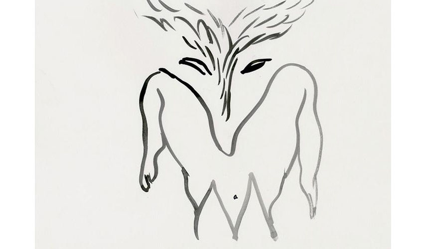

Tropics of Love is a series of India ink drawings on paper of various figures, hybrids of male and female, human, vegetal and animal, with prominent genitals. This series occasionally incorporates inkjet images of exotic landscapes, and the polymorphous figures, drawn with quick, light brushstrokes, sometimes overlap with one another other or are cut into pieces and collaged together to the point of near-abstraction. The word "tropics" is meant to evoke thoughts of extreme limits, the limits of imagination, and it is connected to the question of exoticism and the fantasy of heaven on earth. Multiplied by dozens of expressive drawings, the pornographic theme in Tropics of Love develops, expands and even exhausts itself, as if driven to its own limits, its own “tropics”. The erotic transcends its original purpose of aesthetic enjoyment to extend towards exoticism; in this expansive movement, this overflowing, it seems to go beyond all traditional limits of gender, identity and species.
